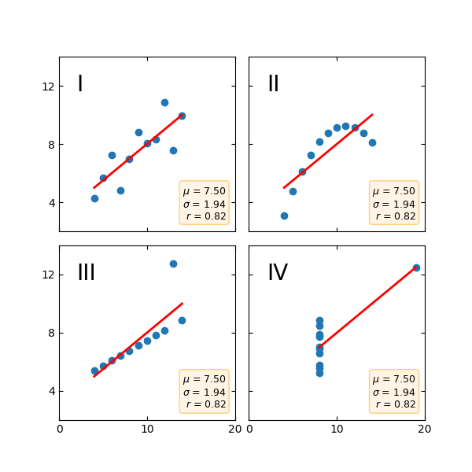

Note
Click here to download the full example code
Anscombe's quartet¶
Anscombe's quartet is a group of datasets (x, y) that have the same mean, standard deviation, and regression line, but which are qualitatively different.
It is often used to illustrate the importance of looking at a set of data graphically and not only relying on basic statistic properties.
import matplotlib.pyplot as plt
import numpy as np
x = [10, 8, 13, 9, 11, 14, 6, 4, 12, 7, 5]
y1 = [8.04, 6.95, 7.58, 8.81, 8.33, 9.96, 7.24, 4.26, 10.84, 4.82, 5.68]
y2 = [9.14, 8.14, 8.74, 8.77, 9.26, 8.10, 6.13, 3.10, 9.13, 7.26, 4.74]
y3 = [7.46, 6.77, 12.74, 7.11, 7.81, 8.84, 6.08, 5.39, 8.15, 6.42, 5.73]
x4 = [8, 8, 8, 8, 8, 8, 8, 19, 8, 8, 8]
y4 = [6.58, 5.76, 7.71, 8.84, 8.47, 7.04, 5.25, 12.50, 5.56, 7.91, 6.89]
datasets = {
'I': (x, y1),
'II': (x, y2),
'III': (x, y3),
'IV': (x4, y4)
}
fig, axs = plt.subplots(2, 2, sharex=True, sharey=True, figsize=(6, 6),
gridspec_kw={'wspace': 0.08, 'hspace': 0.08})
axs[0, 0].set(xlim=(0, 20), ylim=(2, 14))
axs[0, 0].set(xticks=(0, 10, 20), yticks=(4, 8, 12))
for ax, (label, (x, y)) in zip(axs.flat, datasets.items()):
ax.text(0.1, 0.9, label, fontsize=20, transform=ax.transAxes, va='top')
ax.tick_params(direction='in', top=True, right=True)
ax.plot(x, y, 'o')
# linear regression
p1, p0 = np.polyfit(x, y, deg=1)
x_lin = np.array([np.min(x), np.max(x)])
y_lin = p1 * x_lin + p0
ax.plot(x_lin, y_lin, 'r-', lw=2)
# add text box for the statistics
stats = (f'$\\mu$ = {np.mean(y):.2f}\n'
f'$\\sigma$ = {np.std(y):.2f}\n'
f'$r$ = {np.corrcoef(x, y)[0][1]:.2f}')
bbox = dict(boxstyle='round', fc='blanchedalmond', ec='orange', alpha=0.5)
ax.text(0.95, 0.07, stats, fontsize=9, bbox=bbox,
transform=ax.transAxes, horizontalalignment='right')
plt.show()
Keywords: matplotlib code example, codex, python plot, pyplot Gallery generated by Sphinx-Gallery